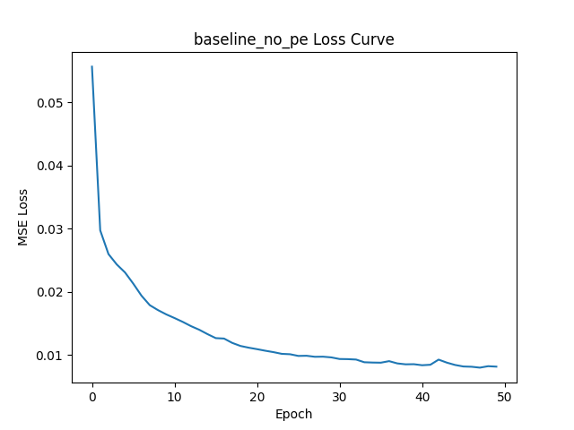
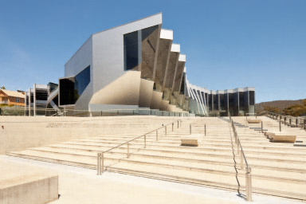
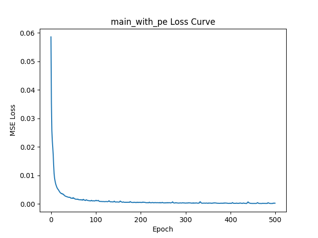

WITHOUT Positional Encoding, the network suffers from Spectral Bias. It can only capture low-frequency information, resulting in a blurry reconstruction.


WITH Positional Encoding (Fourier features), we map inputs to higher dimensions. This allows the Simple MLP to learn high-frequency details like sharp edges and textures.

The results clearly demonstrate that for Implicit Neural Representations, the architecture's ability to process high-frequency signals is key. Our "Ours" model outperforms the baseline by ~6.6 dB, making it a viable candidate for neural image compression.